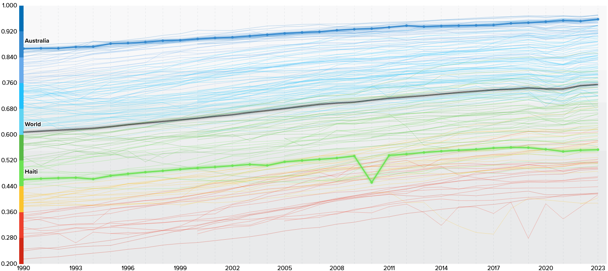

- Human wellbeing in Haiti has recently reached catastrophic levels, due to severe gang violence within the country.
- Violence, killings, kidnappings and displacement make people afraid to leave their homes and communities. Nearly 1.5 million people were internally displaced by mid-2026.
- Violence makes it difficult for people to reach hospitals, while attacks and insecurity have caused health facilities to close or operate with limited capacity. In Port-au-Prince, only about 41% of health facilities with beds were fully functional
- Gang control of roads and disruption of markets and agriculture makes food harder and more expensive to access. Around 5.7 million people were experiencing acute food insecurity in 2026.
- Schools have been forced to close because of violence, attacks and displacement. More than 1,600 schools closed during the 2024–25 school year, affecting about 243,000 students.
- Constant exposure to violence, losing homes and being repeatedly displaced can cause significant psychological distress. UNICEF provided psychosocial support to more than 200,000 children in 2025 because of trauma associated with violence and displacement.
- Businesses, markets, transport routes and farmland are disrupted, reducing people's ability to work and earn an income. Insecurity has also caused agricultural land to be abandoned.
- Women and children are particularly vulnerable to exploitation and violence. Children are also at risk of being recruited into armed groups; the UN verified 2,088 grave violations against children in 2025
United Nations Development Programme 2024, Human development index, United Nations Development Programme, United Nations, viewed 22 August 2026, <https://hdr.undp.org/data-center/human-development-index#/indicies/HDI>.
